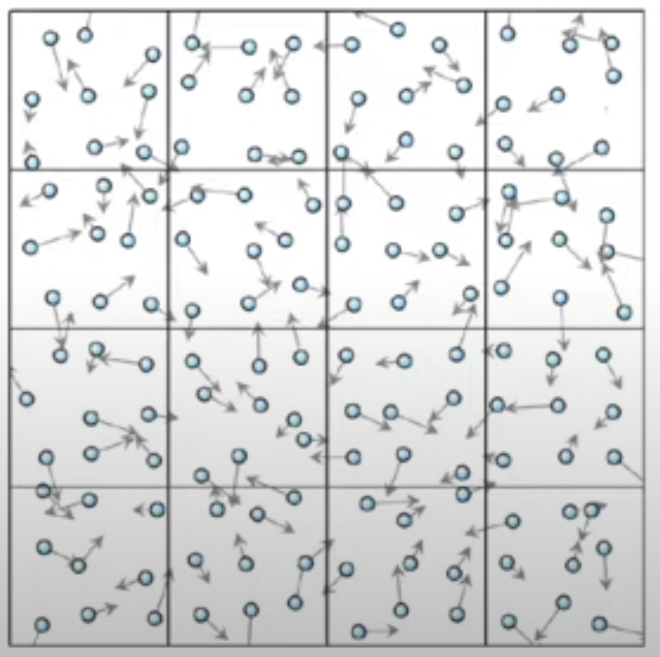
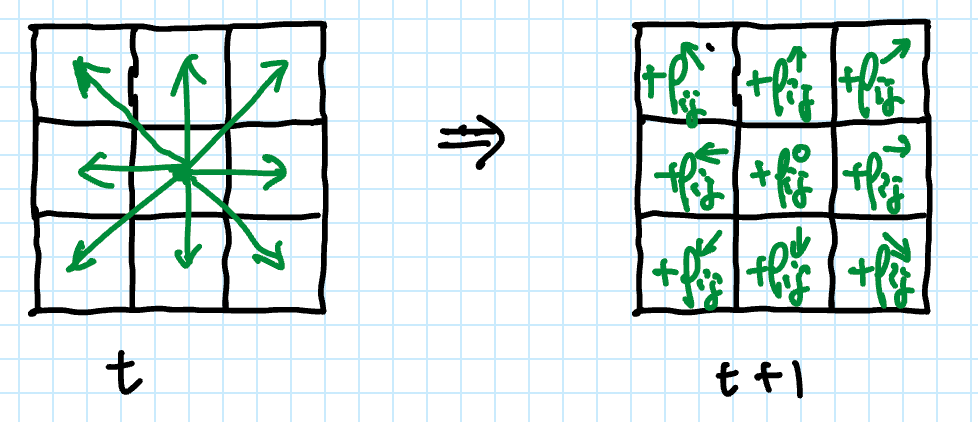

Project: Fluid dynamics
Fluid Dynamics Simulation
Fluid dynamics is the study of the movement of fluids, including air and water. In this project, we will use the Lattice Boltzmann Method (LBM) to simulate fluid dynamics, which is a mesoscopic method based on the kinetic theory of gases.
| micro | meso | macro | |
|---|---|---|---|
| Scale | $10^{-9}$m | $10^{-9} -10^{-6}$m | $>10^{6}$m |
| Physics | molecular | probabilistic | continuous |
| Gov. Eq. | Newton | Boltzmann | Navier-Stokes equations |
| Method | Molecular Dynamics | Lattice Boltzmann | Computational Fluid Dynamics |
This book does not aim to provide a comprehensive understanding of fluid dynamics. If you are interested in learning more about fluid dynamics, you can refer to the following resources:
Lattice Boltzmann Method (LBM)
The general idea of LBM is to simulate the fluid dynamics by modeling the movement of particles in a lattice, a grid of cells, without keeping track of the individual particles. The state of a cell in the lattice is defined by the density of particles moving in different directions, i.e.
\[{\rm state}(i, j) \equiv \rho_{ij}(\mathbf{v})\]
where $(i, j)$ is the position of the cell in the lattice and $\mathbf{v}$ is the velocity of the particles.
The particles move with different velocities $\mathbf v$ and collide with each other, driving the fluid to reach an equilibrium state, where the energy of the particles is governed by the Boltzmann distribution
\[\rho_{\rm eq}(E) \sim e^{-\frac{E}{k_BT}} ({\rm or }\; e^{- {\rm const.} \times |\mathbf{v}|^2}),\]
where $k_B$ is the Boltzmann constant, $T$ is the temperature, and $E = \frac{1}{2}m|\mathbf{v}|^2$ is the energy of the particles.
D2Q9 model
The lattice Boltzmann method uses a discrete set of velocities, which is a simplification of the continuous velocity space. One of the simplest models is the D2Q9 model, which contains
- a 2D lattice, and
- 9 discrete velocities: $(0,0)$, $(1,0), (0,1), (-1,0), (0,-1)$, $(1,1), (-1,1), (-1,-1), (1,-1)$.
Lattice Boltzmann Method (LBM) contains two steps:
- Streaming - particles move to neighboring cells
- Collision - particles collide and exchange momentum
Streaming
Collision - Bhatnagar-Gross-Krook (BGK) model.
The collision step is based on the Bhatnagar-Gross-Krook (BGK) model, which is a simplified version of the Boltzmann equation. The collision step is defined as
\[\rho\leftarrow(1-\omega)\rho_0+\omega\rho_\mathrm{\rm eq}\]
where $\rho$ is the updated density $\rho_0$ is the density before collision, and $\rho_{\text{eq}}$ is the equilibrium density $\omega = \Delta t/\tau$, where $\tau$ is the (relative) relaxation time

The BGK model has a nice property that it conserves:
- total density $\rho$
- momentum $\rho\mathbf{u}$
Julia implementation
The following code is a part of the package MyFirstPackage that we created in the previous section: My First Package.
File: src/fluid.jl (Step 1-6)
Step 1. Define the lattice Boltzmann configuration
Let us start by defining an abstract type for lattice Boltzmann configurations and a concrete type that implements the D2Q9 lattice.
"""
AbstractLBConfig{D, N}
An abstract type for lattice Boltzmann configurations.
"""
abstract type AbstractLBConfig{D, N} endThe D2Q9 lattice Boltzman configuration is defined as follows:
"""
D2Q9 <: AbstractLBConfig{2, 9}
A lattice Boltzmann configuration for 2D, 9-velocity model.
"""
struct D2Q9 <: AbstractLBConfig{2, 9} end
directions(::D2Q9) = (
Point(1, 1), Point(-1, 1),
Point(1, 0), Point(0, -1),
Point(0, 0), Point(0, 1),
Point(-1, 0), Point(1, -1),
Point(-1, -1),
)The directions function returns the 9 discrete velocities in the D2Q9 model. The velocities are ordered in a specific way, which enables us to define a function to flip the velocity vector. This is useful for handling the boundaries and barriers in the lattice.
# directions[k] is the opposite of directions[flip_direction_index(k)
function flip_direction_index(::D2Q9, i::Int)
return 10 - i
endStep 2: Define the Cell type for storing the state
The cell state is defined by the density of the fluid in different directions, $\rho_{ij}(\mathbf{v})$.
# the density of the fluid, each component is the density of a velocity
struct Cell{N, T <: Real}
density::NTuple{N, T}
end
# the total density of the fluid
density(cell::Cell) = sum(cell.density)
# the density of the fluid in a specific direction,
# where the direction is an integer
density(cell::Cell, direction::Int) = cell.density[direction]Expect the total density, the momentum $\mathbf{u}$ is also conserved, which is defined as the momentum of the fluid.
"""
momentum(lb::AbstractLBConfig, rho::Cell)
Compute the momentum of the fluid from the density of the fluid.
"""
function momentum(lb::AbstractLBConfig, rho::Cell)
return mapreduce((r, d) -> r * d, +, rho.density, directions(lb)) / density(rho)
endLet us also define the addition and multiplication operations for the Cell type.
Base.:+(x::Cell, y::Cell) = Cell(x.density .+ y.density)
Base.:*(x::Real, y::Cell) = Cell(x .* y.density)Step 3. Implement the streaming step
# streaming step
function stream!(
lb::AbstractLBConfig{2, N}, # lattice configuration
newgrid::AbstractMatrix{D}, # the updated grid
grid::AbstractMatrix{D}, # the original grid
barrier::AbstractMatrix{Bool} # the barrier configuration
) where {N, T, D<:Cell{N, T}}
ds = directions(lb)
@inbounds for ci in CartesianIndices(newgrid)
i, j = ci.I
newgrid[ci] = Cell(ntuple(N) do k # collect the densities
ei = ds[k]
m, n = size(grid)
i2, j2 = mod1(i - ei[1], m), mod1(j - ei[2], n)
if barrier[i2, j2]
# if the cell is a barrier, the fluid flows back
density(grid[i, j], flip_direction_index(lb, k))
else
# otherwise, the fluid flows to the neighboring cell
density(grid[i2, j2], k)
end
end)
end
endStep 4. Implement the collision step
By the Bhatnagar-Gross-Krook (BGK) model, the collision step drives the fluid towards an equilibrium state. The equilibrium density is completely determined by the total density and the momentum of the fluid:
\[\rho_{\rm eq}(\mathbf{v}_i) \approx \rho_{\rm tot} w_i \left(1 + 3\mathbf{v}_i\cdot\mathbf{u} + \frac{9}{2}(\mathbf{v}_i\cdot\mathbf{u})^2 - \frac{3}{2}\mathbf{u}\cdot\mathbf{u}\right)\]
where $\rho_{\rm tot}$ is the total density, $\mathbf{u}$ is the momentum, $w_i \sim e^{-|\mathbf{v}_i|^2}$ is the distribution of velocities with mean-velocity zero, and $v_i$ is the velocity vector.
The detailed derivation of the equilibrium density could be found in the first reference at the top of this page.
"""
equilibrium_density(lb::AbstractLBConfig, ρ, u)
Compute the equilibrium density of the fluid from the total density and the momentum.
"""
function equilibrium_density(lb::AbstractLBConfig{D, N}, ρ, u) where {D, N}
ws, ds = weights(lb), directions(lb)
return Cell(
ntuple(i-> ρ * ws[i] * _equilibrium_density(u, ds[i]), N)
)
end
# the distribution of the 9 velocities at the equilibrium state
weights(::D2Q9) = (1/36, 1/36, 1/9, 1/9, 4/9, 1/9, 1/9, 1/36, 1/36)
function _equilibrium_density(u, ei)
# the equilibrium density of the fluid with a specific mean momentum
return (1 + 3 * dot(ei, u) + 9/2 * dot(ei, u)^2 - 3/2 * dot(u, u))
endThe collision step that implements the BGK model is defined as follows:
# collision step, applied on a single cell
function collide(lb::AbstractLBConfig{D, N}, rho; viscosity = 0.02) where {D, N}
omega = 1 / (3 * viscosity + 0.5) # "relaxation" parameter
# Recompute macroscopic quantities:
v = momentum(lb, rho)
return (1 - omega) * rho + omega * equilibrium_density(lb, density(rho), v)
endStep 5. Implement the lattice Boltzmann simulation
"""
LatticeBoltzmann{D, N, T, CFG, MT, BT}
A lattice Boltzmann simulation with D dimensions, N velocities, and lattice configuration CFG.
"""
struct LatticeBoltzmann{D, N, T, CFG<:AbstractLBConfig{D, N}, MT<:AbstractMatrix{Cell{N, T}}, BT<:AbstractMatrix{Bool}}
config::CFG # lattice configuration
grid::MT # density of the fluid
gridcache::MT # cache for the density of the fluid
barrier::BT # barrier configuration
end
function LatticeBoltzmann(config::AbstractLBConfig{D, N}, grid::AbstractMatrix{<:Cell}, barrier::AbstractMatrix{Bool}) where {D, N}
@assert size(grid) == size(barrier)
return LatticeBoltzmann(config, grid, similar(grid), barrier)
endA single step of the lattice Boltzmann simulation is defined as follows, which directly modifies the grid field of the LatticeBoltzmann type.
"""
step!(lb::LatticeBoltzmann)
Perform a single step of the lattice Boltzmann simulation.
"""
function step!(lb::LatticeBoltzmann)
copyto!(lb.gridcache, lb.grid)
stream!(lb.config, lb.grid, lb.gridcache, lb.barrier)
lb.grid .= collide.(Ref(lb.config), lb.grid)
return lb
endFor better visualization, we define a function to compute the curl of the momentum field in 2D, which is defined as:
"""
curl(u::AbstractMatrix{Point2D{T}})
Compute the curl of the momentum field in 2D, which is defined as:
```math
∂u_y/∂x−∂u_x/∂y
```
"""
function curl(u::Matrix{Point2D{T}}) where T
return map(CartesianIndices(u)) do ci
i, j = ci.I
m, n = size(u)
uy = u[mod1(i + 1, m), j][2] - u[mod1(i - 1, m), j][2]
ux = u[i, mod1(j + 1, n)][1] - u[i, mod1(j - 1, n)][1]
return uy - ux # a factor of 1/2 is missing here?
end
endStep 6. Find the example simulation
A D2Q9 lattice Boltzmann simulation example. A simple linear barrier is added to the lattice.
function example_d2q9(;
height = 80, width = 200,
u0 = Point(0.0, 0.1)) # initial and in-flow speed
# Initialize all the arrays to steady rightward flow:
rho = equilibrium_density(D2Q9(), 1.0, u0)
rgrid = fill(rho, height, width)
# Initialize barriers:
barrier = falses(height, width) # True wherever there's a barrier
mid = div(height, 2)
barrier[mid-8:mid+8, div(height,2)] .= true # simple linear barrier
return LatticeBoltzmann(D2Q9(), rgrid, barrier)
endStep 7. Include the above file into the package module
File: src/MyFirstPackage.jl
module MyFirstPackage
# import packages
using LinearAlgebra
# export interfaces
export Lorenz, integrate_step
export Point, Point2D, Point3D
export RungeKutta, Euclidean
export D2Q9, LatticeBoltzmann, step!, equilibrium_density, momentum, curl, example_d2q9, density
include("lorenz.jl")
include("fluid.jl")
endUsing the package
File: examples/barrier.jl
using Makie: RGBA # for visualization
using Makie, CairoMakie
using MyFirstPackage # our package
# Set up the visualization with Makie:
lb = example_d2q9()
vorticity = Observable(curl(momentum.(Ref(lb.config), lb.grid))')
fig, ax, plot = image(vorticity, colormap = :jet, colorrange = (-0.1, 0.1))
# Show barrier
barrier_img = map(x -> x ? RGBA(0, 0, 0, 1) : RGBA(0, 0, 0, 0), lb.barrier)
image!(ax, barrier_img')
# Recording the simulation
record(fig, joinpath(@__DIR__, "barrier.mp4"), 1:100; framerate = 10) do i
for i=1:20
step!(lb)
end
vorticity[] = curl(momentum.(Ref(lb.config), lb.grid))'
endTo ensure the reproducibility of the code, we need to create a local environment and install the required packages.
pkg> activate examples
pkg> dev .
pkg> add Makie CairoMakie BenchmarkToolsType Backspace to exit the package mode. To execute the code, type
julia> include("examples/barrier.jl")You should see a new file barrier.mp4 in the examples directory, which is the recording of the simulation.
Benchmarking
julia> using BenchmarkTools
julia> @benchmark step!($(deepcopy(lb)))
BenchmarkTools.Trial: 3637 samples with 1 evaluation.
Range (min … max): 1.323 ms … 1.899 ms ┊ GC (min … max): 0.00% … 0.00%
Time (median): 1.363 ms ┊ GC (median): 0.00%
Time (mean ± σ): 1.374 ms ± 30.730 μs ┊ GC (mean ± σ): 0.00% ± 0.00%
▁▇█▆▄▃▃▂▂▂▁▂▂▂▂▁▁▁▁▁▁ ▁
▃▁▁▃▃▃▃▁▁▁▃█████████████████████████▆▆▆▆▅▆▆▆▆▅▅▆▆▃▅▅▄▆▆▅▃▆ █
1.32 ms Histogram: log(frequency) by time 1.49 ms <
Memory estimate: 0 bytes, allocs estimate: 0.Profiling - identify the performance bottleneck
Premature optimization is the root of all evil – Donald Knuth
Performance optimization comes after the correctness of the code, and it should be based on the profiling result. Profiling is mainly used to identify the performance bottleneck of your code. The Profile module in Julia provides a set of tools to profile your code.
julia> using Profile
julia> Profile.init(n = 10^7, delay = 0.001) # set the number of samples and the delay between samplesThen you can profile your code by wrapping the code with @profile macro.
julia> @profile for i in 1:100
step!(lb)
endIn order to collect enough samples, we run the step! function for 100 times. To view the profile result, you can use the Profile.print function.
julia> Profile.print(; mincount=10) # only show functions with ≥10 counts
Overhead ╎ [+additional indent] Count File:Line; Function
=========================================================
... truncated message ...
╎ ╎ ╎ ╎ 88 …rc/fluid.jl:144; step!(lb::LatticeBoltzm…
╎ ╎ ╎ ╎ 88 …rc/fluid.jl:76; stream!(lb::D2Q9, newgr…
33╎ ╎ ╎ ╎ 88 …e/ntuple.jl:19; ntuple
╎ ╎ ╎ ╎ 18 …rc/fluid.jl:79; (::MyFirstPackage.var…
╎ ╎ ╎ ╎ 10 …perators.jl:830; mod1
1╎ ╎ ╎ ╎ 16 …rc/fluid.jl:80; (::MyFirstPackage.var…
╎ ╎ ╎ ╎ 15 …actarray.jl:1291; getindex
╎ ╎ ╎ ╎ ╎ 13 …actarray.jl:1323; _getindex
1╎ ╎ ╎ ╎ ╎ 13 …actarray.jl:702; checkbounds
╎ ╎ ╎ ╎ ╎ 12 …actarray.jl:681; checkbounds
╎ ╎ ╎ ╎ 13 …rc/fluid.jl:145; step!(lb::LatticeBoltzm…
╎ ╎ ╎ ╎ 13 …roadcast.jl:911; materialize!
╎ ╎ ╎ ╎ 13 …roadcast.jl:914; materialize!
╎ ╎ ╎ ╎ 13 …roadcast.jl:956; copyto!
╎ ╎ ╎ ╎ 13 …roadcast.jl:1003; copyto!
╎ ╎ ╎ ╎ ╎ 12 …simdloop.jl:77; macro expansion
╎ ╎ ╎ ╎ ╎ 12 …roadcast.jl:1004; macro expansion
╎ ╎ ╎ ╎ ╎ 12 …roadcast.jl:636; getindex
Total snapshots: 112. Utilization: 100% across all threads and tasks. Use the `groupby` kwarg to break down by thread and/or task.Alternatively, you can use the format :flat to show the profile result in a flat view.
julia> Profile.print(; mincount=10, format=:flat)
Count Overhead File Line Function
===== ======== ==== ==== ========
... truncated message ...
10 0 @MyFirstPackage/src/fluid.jl 63 #6
11 11 @MyFirstPackage/src/fluid.jl ? (::MyFirstPackage.var"#8#9"{D2Q9, Matrix{MyFirstPackage.Cell{9, Float64}}, BitMatrix, N…
20 0 @MyFirstPackage/src/fluid.jl 79 (::MyFirstPackage.var"#8#9"{D2Q9, Matrix{MyFirstPackage.Cell{9, Float64}}, BitMatrix, N…
17 0 @MyFirstPackage/src/fluid.jl 80 (::MyFirstPackage.var"#8#9"{D2Q9, Matrix{MyFirstPackage.Cell{9, Float64}}, BitMatrix, N…
15 3 @MyFirstPackage/src/fluid.jl 94 collide(lb::D2Q9, rho::MyFirstPackage.Cell{9, Float64}; viscosity::Float64)
11 1 @MyFirstPackage/src/fluid.jl 62 equilibrium_density(lb::D2Q9, ρ::Float64, u::Point2D{Float64})
97 0 @MyFirstPackage/src/fluid.jl 144 step!(lb::LatticeBoltzmann{2, 9, Float64, D2Q9, Matrix{MyFirstPackage.Cell{9, Float64}}…
10 0 @MyFirstPackage/src/fluid.jl 145 step!(lb::LatticeBoltzmann{2, 9, Float64, D2Q9, Matrix{MyFirstPackage.Cell{9, Float64}}…
97 0 @MyFirstPackage/src/fluid.jl 76 stream!(lb::D2Q9, newgrid::Matrix{MyFirstPackage.Cell{9, Float64}}, grid::Matrix{MyFirs…
Total snapshots: 120. Utilization: 100% across all threads and tasks. Use the `groupby` kwarg to break down by thread and/or task.The printed result shows that the stream! step is more costly than the collide step, which should be the focus of optimization.
Profiling is a statistical method to measure the performance of your code. It works by sampling the function call stack of the running code at a certain frequency.
Let use look at the stream! function to see which part of the code is more costly.
julia> Profile.clear() # clear the previous profile result
julia> @profile for i in 1:300
MyFirstPackage.stream!(lb.config, lb.grid, lb.gridcache, lb.barrier)
end
Profile.print(format=:flat, mincount=30) # show the profile result, only show the functions that are called more than 5 times
... truncated message ...
╎ ╎ ╎ ╎ 263 …rc/fluid.jl:76; stream!(lb::D2Q9, newgri…
77╎ ╎ ╎ ╎ 259 …e/ntuple.jl:19; ntuple
╎ ╎ ╎ ╎ 57 …rc/fluid.jl:79; (::MyFirstPackage.var"…
28╎ ╎ ╎ ╎ 28 @Base/int.jl:86; -
╎ ╎ ╎ ╎ 29 …perators.jl:830; mod1
╎ ╎ ╎ ╎ 27 @Base/int.jl:287; mod
╎ ╎ ╎ ╎ ╎ 27 @Base/div.jl:319; fld
╎ ╎ ╎ ╎ ╎ 27 @Base/div.jl:354; div
╎ ╎ ╎ ╎ ╎ 25 @Base/int.jl:1068; -
25╎ ╎ ╎ ╎ ╎ 25 @Base/int.jl:86; -
3╎ ╎ ╎ ╎ 51 …rc/fluid.jl:80; (::MyFirstPackage.var"…
╎ ╎ ╎ ╎ 48 …actarray.jl:1291; getindex
╎ ╎ ╎ ╎ 46 …actarray.jl:1323; _getindex
3╎ ╎ ╎ ╎ ╎ 46 …actarray.jl:702; checkbounds
╎ ╎ ╎ ╎ ╎ 43 …actarray.jl:681; checkbounds
╎ ╎ ╎ ╎ ╎ 39 …actarray.jl:728; checkbounds_indi…
╎ ╎ ╎ ╎ ╎ 39 …actarray.jl:728; checkbounds_ind…
╎ ╎ ╎ ╎ ╎ 39 …actarray.jl:763; checkindex
38╎ ╎ ╎ ╎ ╎ ╎ 39 @Base/int.jl:86; -
╎ ╎ ╎ ╎ 29 …rc/fluid.jl:83; (::MyFirstPackage.var"…
29╎ ╎ ╎ ╎ 29 …sentials.jl:14; getindex
Total snapshots: 264. Utilization: 100% across all threads and tasks. Use the `groupby` kwarg to break down by thread and/or task.The line 79 in file src/fluid.jl costs 57/264 samples, which is the following line of code:
i2, j2 = mod1(i - ei[1], m), mod1(j - ei[2], n)The line 80 in file src/fluid.jl costs 51/264 samples, which is the following line of code:
if barrier[i2, j2]and most of the time is spent on the checkbounds function.
Could we remove the boundary check? Please refer to the Julia Performance Tips for more information.